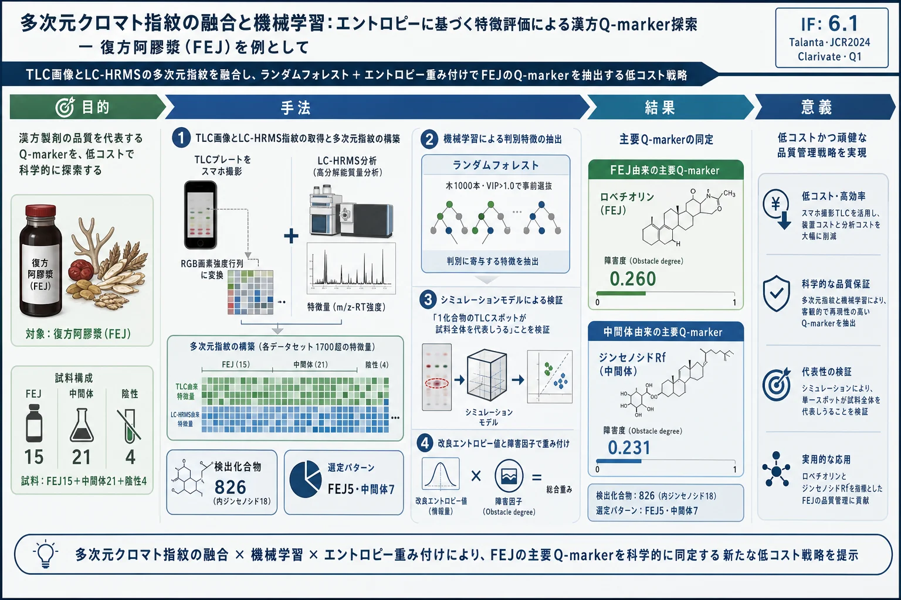
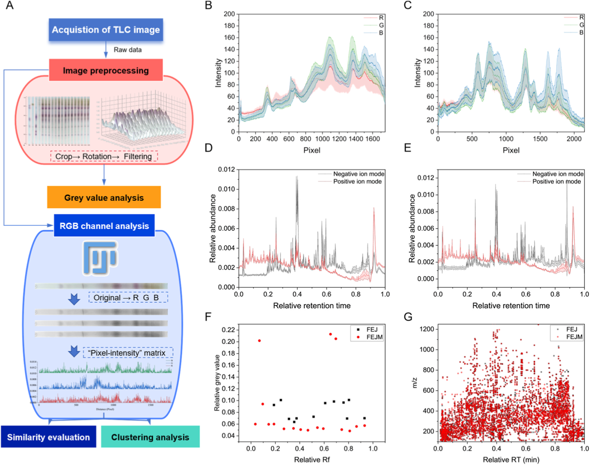
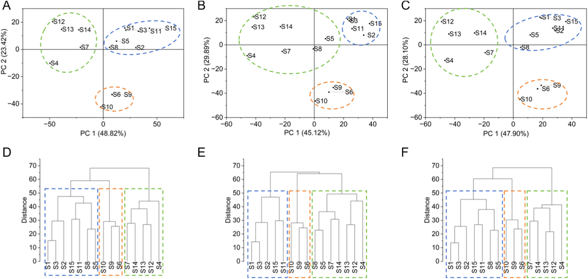
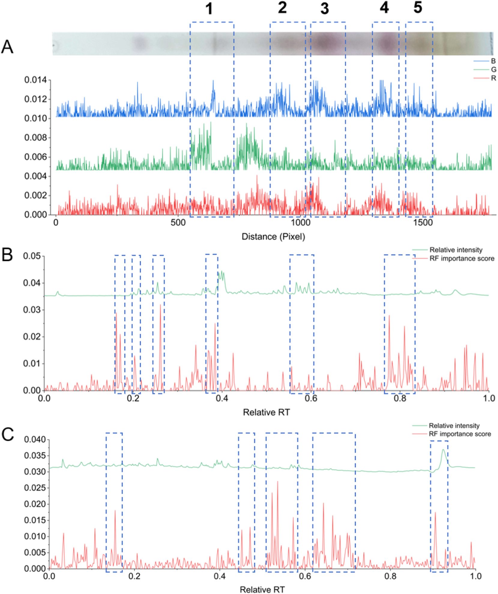
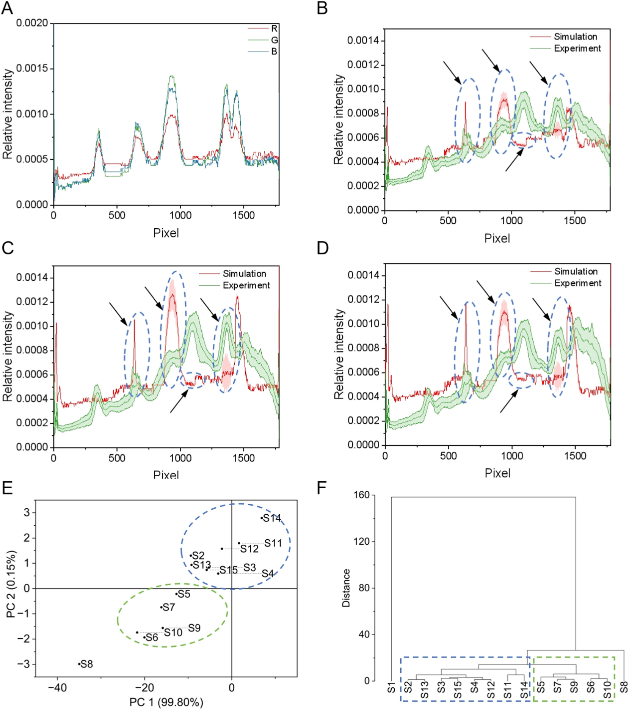
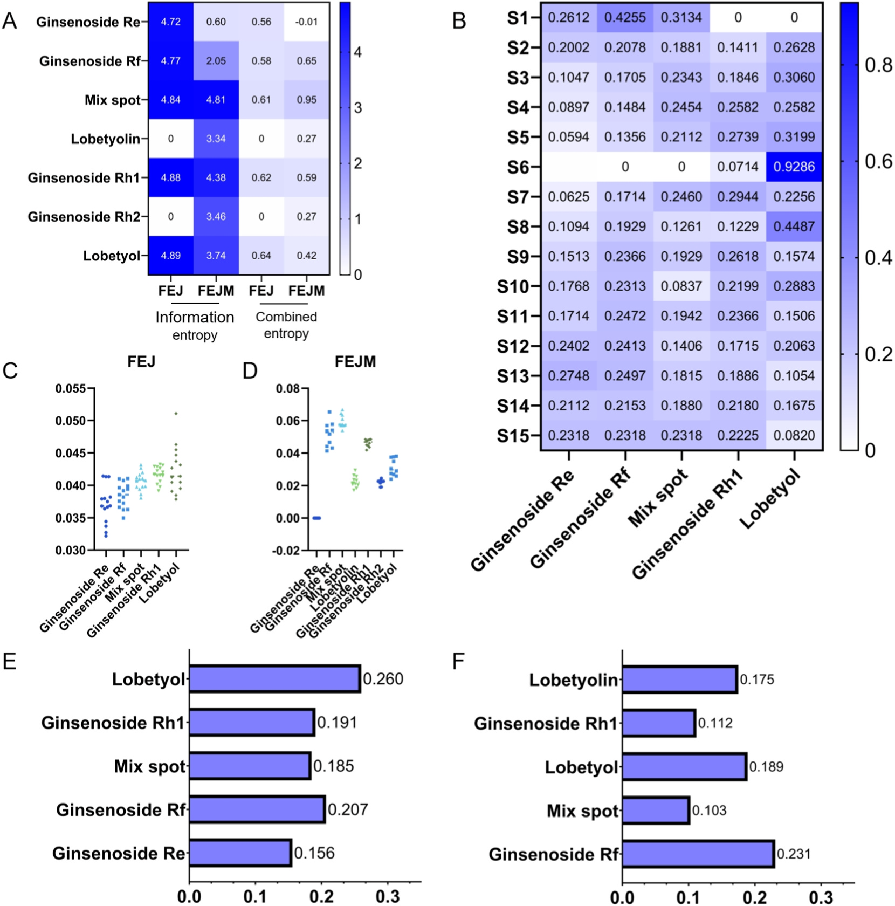

多次元クロマト指紋の融合と機械学習：エントロピーに基づく特徴評価による漢方Q-marker探索 — 復方阿膠漿（FEJ）を例として

<!-- 方針: ほぼ全訳＋必要に応じた補足。原文構成に沿って訳出。「> 補足:」は訳者注。 -->
書誌情報
- 原題: Multidimensional chromatographic fingerprint fusion with machine learning: Entropy-based feature evaluation for TCM quality marker discovery
- 著者: Jiamu Ma, Fang Lv, Letian Ying, Yongqi Yang, Yuqing Yang, Xiaodan Qi, Jianling Yao, Yu Cao, Lingzi Wu, Wanzhu Wang, Jiaqian Xing, Xinru Wu, Juan Qin, Yan Zhang（責任著者）, Gaimei She（責任著者）
- 所属: 北京中医薬大学 中薬学院（北京市房山区）／東阿阿膠股份有限公司・山東省ゼラチン医薬研究開発重点実験室（山東省聊城）
- 掲載: Talanta 303 (2026) 129500. https://doi.org/10.1016/j.talanta.2026.129500
- インパクトファクター: 6.1（Talanta, JCR 2024 / Clarivate, Q1。分析化学分野の代表的国際誌）
- 受領 2025-12-05 / 改訂 2026-01-19 / 採録 2026-02-01 / オンライン公開 2026-02-02
- ライセンス: © 2026 Elsevier B.V.
- 利益相反: 責任著者 Gaimei She は中国国家知識産権局に特許（出願番号 202410240182.3）を出願中。データは非公開（confidential）。
補足: 復方阿膠漿（Fufang E'jiao Jiang, FEJ／ふくほう・あきょうしょう）は、阿膠（Colla Corii Asini＝ロバの皮由来のニカワ）・熟地黄（Radix Rehmanniae Preparata）・紅参（red ginseng）・党参（Radix Codonopsis Pilosulae）・山楂（Fructus Crataegi）からなる中国の複方処方で、「気血両虚（きけつりょうきょ＝エネルギーと血の両方の不足）」に用いられる。本論文は「どの成分を測れば品質を代表できるか」を、TLC（薄層クロマトグラフィー）のプレート画像とLC-HRMS（高分解能質量分析付き液体クロマト）という2種類の指紋を数値データに変換し、機械学習で選び出す方法を提案した研究。中国薬典が品質評価の要とする n-ブタノール層（サポニン・トリテルペノイドに富む画分） に焦点を当てている。
要旨（Abstract）
クロマトグラフィーは、伝統中薬（TCM）の品質評価に用いられる基幹的手法である。しかし、クロマトデータは複数化合物のシグナルが重なり合い干渉するため複雑で、化学的に重要な特徴を正確に同定することがしばしば妨げられる。本研究では、多次元クロマト指紋分析と機械学習を組み合わせ、代表的な TCM 処方である復方阿膠漿（FEJ）の特徴的化合物の分子的起源を追跡する統合的アプローチを提案した。包括的な化学プロファイリングに続いて、TLC と LC-HRMS を含むクロマト指紋から多次元データセットを構築した。各データセットは保持時間・m/z・RGB 値から導かれる 1700 を超える特徴量を含む。ランダムフォレストなどの機械学習アルゴリズムを用いて判別的特徴を選択し、FEJ で 5 パターン、その中間体で 7 パターンを同定した（主にジンセノシド類）。さらにシミュレーションモデルにより、これらの特徴の重要性を検証し、単一化合物のクロマトスポットが試料の特徴を効果的に代表しうることを示した。加えて、選ばれた特徴を評価・重み付けするために、改良エントロピー値と障害因子（obstacle factor）を導入した。その結果、ロベチオリン（lobetyolin）が FEJ の、ジンセノシド Rf が中間体の、主要な品質関連マーカーと認識された。実験的検証により、本手法は重なり合うクロマトシグナルを効果的にデコンボリュート（分離・分解）し、重要な品質関連特徴を同定できることが示された。これは複雑系の品質管理のための効率的でスケーラブルな計算フレームワークを提供する。総じて本戦略は、汎用的なデータ構造とモジュール式アルゴリズム設計に基づいており、特定分野の専門知識に依存せず、複雑なクロマト指紋をもつあらゆる試料系（医薬・環境・食品試料など）への適用が期待される。
1. 序論（Introduction）
クロマトグラフィーは TCM 処方の品質評価に最も広く用いられる手法の一つであり、なかでも薄層クロマトグラフィー（TLC）と液体クロマトグラフィー（LC）の組み合わせが最も一般的である[1]。TLC は、低コストで迅速な定性・定量分析が急務な場面など、複雑な化合物混合物の日常的な化学分析に一般的に用いられる。分離が速く操作が容易なため、多様な化合物を含む混合物の分離において TLC は代替不能の重要性をもつ[2–5]。TLC が広く用いられるクロマト法の中で化合物とその代謝物の分析に最も単純な方法だと評する研究者すらいる[6,7]。TLC は移動相の選択肢が広く、試料識別の柔軟性が高く、負荷容量も大きいため、複雑な化学物質の化学組成プロファイルを得ることができる[8]。
TLC が色によって豊富な化学物質のより明瞭な情報を与えるのとは異なり、質量分析と結合した LC は、ほぼあらゆる二次代謝物について詳細な情報を提供する。液体クロマトグラフィー-高分解能質量分析（LC-HRMS）は高感度で試料適応範囲が広く、化学的特徴の包括的・効率的な研究と、試料間の動的変化のモニタリングを可能にする[9,10]。ただし、TLC と LC-HRMS の生データの解析だけでは、化学プロファイルの深い理解には至らない。
クロマト指紋（fingerprint）は、TCM の複雑さを探るための全体論的かつ定量可能なアプローチであり、化学成分の相対的に完全で包括的なプロファイルを構築するため本研究に導入された。天然物の構造分類[11]、生薬原料の植物起源[12,13]などを分類するモデルが確立されてきた。これらの研究はコンピュータ処理により TLC 指紋を評価しようとしているが、異なる分類を決定づける特徴や、選択されたマーカー化合物の性能は依然として不明確である。化合物のプロファイリングは、多数の試料を同一条件下で同時に可視化できる TLC 画像によって正確に得られる[13]。バンドの色やパターンのグレースケールを調べることで、各バンドについて化合物組成のプロファイリング特徴情報のセットを作成できる。しかし、TLC 画像特徴であれ LC-HRMS スペクトルデータであれ、鍵となる課題は、数百〜数千の変数の中から、ノイズや無関係な変動ではなく真に品質を示す最も情報量の多い特徴を、いかに効果的に選び出すかにある。
TLC 指紋から意味のある特徴やそれに対応する化合物を特徴づけることは、クロマトグラム上の微妙な変化を定義するのが難しいため、複雑な作業である。ケモインフォマティクスは指紋の解析において重要な役割を果たす。ケモインフォマティクス解析を用いれば、複雑な分析手順を省くことができる[14]。ただし、より簡便な装置と最小限の手順に切り替える際には、分析精度の損失が生じうる。機械学習やエントロピーモデルなどの評価手法を併用することで、この損失を十分に補う可能性が得られる[15–17]。したがって、TLC 指紋分析と、ケモインフォマティクス、機械学習に基づく特徴選択、エントロピーに基づく評価を統合することは、TLC データを評価し重要な品質マーカーを同定するための強力なアプローチとなりうる。これが本研究の焦点である。
復方阿膠漿（FEJ）は、阿膠（Colla Corii Asini）・熟地黄（Radix Rehmanniae Preparata）・紅参（red ginseng）・党参（Radix Codonopsis Pilosulae）・山楂（Fructus Crataegi）からなるよく知られた TCM 処方である。TCM 臨床で広く用いられ、気血両虚に処方される[18]。私たちの先行研究では「スペクトル-効果（spectrum-effect）」関係とネットワーク薬理により品質マーカーがスクリーニングされ、FEJ の品質規格も改良されてきた。しかし、FEJ の製造工程における鍵化合物の伝達性（transitivity）と追跡可能性（traceability）は依然として不明である。サポニンとトリテルペノイドに富む n-ブタノール層は、中国薬典によって FEJ の品質評価の鍵画分と認められている[19]。したがって本研究は、全化学物質ではなくこの特定画分に焦点を当てた。
私たちは、TCM 処方中の化学物質を低コストで評価する重要性に対処するため、TLC と LC-MS のクロマト指紋を組み合わせた統合的アプローチを提案した。機械学習支援の特徴選択と計算的評価手法を用いることで、最終製品 FEJ だけでなくその中間体（FEJM）においてもマーカー化合物を識別することを目指した。このアプローチは FEJ 中のロベチオリンと FEJM 中のジンセノシド Rf を重要化合物として同定することに成功し、複雑な TCM 処方の製造工程全体を通じた品質モニタリングと追跡可能性のための新戦略を提供する。さらに本アプローチは「特徴融合 - 機械学習スクリーニング - エントロピー重み付け選択」として実行されるモジュール式計算パイプラインとして設計されており、分野固有の改変を要さず、医薬品や環境試料など多様な複雑系に適応可能である。
2. 材料と方法（Materials and methods）
2.1. 化学物質・材料・試薬
復方阿膠漿（FEJ）15 ブランチ、FEJ の 7 つの製造工程に由来する中間体 21 ブランチ、および単一生薬を欠く陰性試料（N1〜N4）を、すべて東阿阿膠股份有限公司より提供を受けた。これらは S1〜S15（FEJ 試料）、I1〜I21（FEJ 中間体）、N1〜N4（陰性試料）と番号付けした（関連ロット番号は Table S1）。
紅参の対照薬材（121045–200604）と党参（Codonopsis radix）（121057–202107）、および対照標準品としてジンセノシド Rg2（111779–200801）・Rb1（110704–202230）・Rb2（111715–202104）・Rd（111818–202104）・Re（LENA-CAAA）・Rg1（110703–202235）・Rg3（110804–201504）・Rh2（111748–202102）・Ro（111903–202106）を、中国食品薬品検定研究院（Chinese Academy of Food and Drug Control）より取得した。ジンセノシド Rc（DST180120-013）・Rb3（DST180913-008）は成都徳思特生物技術有限公司より、ジンセノシド Rh1（AF20050408）・Rg5（AF21051605）・ロベチオール（lobetyol, 136171-87-4）は成都愛法生物科技有限公司より取得した。ジンセノシド Rf（PRF9061942）とロベチオリン（lobetyolin, PRF9121002）は Biopurify Phytochemicals Ltd. より取得した。全対照標準品の純度は >98%。上記以外の試薬はすべて市販品を用いた。
補足: 「ブランチ（branch）」は原文の表現をそのまま訳したもので、製造の系統・バッチ単位を指すとみられる。「ロベチオール（lobetyol）」と「ロベチオリン（lobetyolin）」は別化合物（後者は前者の配糖体）で、党参の代表成分。原文では両者が区別して登場するため訳し分けている。
2.2. 試料調製と標準溶液の調製
FEJ・FEJM とも、各試料 20 mL を等量（20 mL）の水飽和 n-ブタノールで 1 回抽出した。n-ブタノール層を分離し、20 mL のアンモニア試液で 1 回洗浄したのち、水飽和 n-ブタノール 20 mL で 3 回抽出した。合わせた有機相を蒸発乾固し、得られた乾固残渣をメタノール 1 mL に再溶解して、これを分析用の試験試料とした。
生薬試料 1.0 g を水 50 mL で 45 分間超音波抽出した。定性ろ紙でろ過後、この抽出液を対照溶液とし、試料と同一の手順で処理した。対照標準品（ジンセノシド Ro・Re・Rf・Rh1・Rh2）をメタノールに溶かして 1 mg/mL の濃度とし、標準溶液として用いた。
2.3. TLC のクロマト条件・パラメータ
分離は 10 cm × 10 cm のシリカゲル G 薄層プレート（青島製）上で行った。FEJ 試料（8 µL）・対照標準溶液（1 µL）・紅参の対照薬材（2 µL）・党参（Codonopsis radix）の対照薬材（8 µL）を、定量キャピラリーを用いてプレート下端から 10 mm の位置にアプライした。次にプレートを、室温で約 30 分間あらかじめ移動相で飽和させたツイントラフチャンバーに入れ、展開剤がプレート下端から 80 mm に達するまで展開した。移動相は クロロホルム : メタノール : 1% ギ酸水溶液（6.5 : 2.5 : 0.5, v/v）。展開後、プレートをチャンバーから取り出して乾燥させ、10% 硫酸エタノール溶液に浸し、105 ℃でパターンが明瞭な色を示すまで加熱した。全プレート画像は可視光下で記録した。
表1. TLC 条件（原文本文より整理）
| 項目 | 条件 |
|---|---|
| プレート | シリカゲル G、10 cm × 10 cm（青島製） |
| アプライ量 | FEJ 試料 8 µL／標準溶液 1 µL／紅参対照薬材 2 µL／党参対照薬材 8 µL |
| アプライ位置 | 下端から 10 mm |
| 移動相 | クロロホルム : メタノール : 1% ギ酸水溶液 ＝ 6.5 : 2.5 : 0.5（v/v） |
| チャンバー | ツイントラフ、室温で約 30 分飽和 |
| 展開距離 | 下端から 80 mm |
| 発色 | 10% 硫酸エタノール溶液に浸漬 → 105 ℃ で加熱 |
| 記録 | 可視光下 |
2.4. UPLC-QE-MS/MS 分析
UPLC 分析は Vanquish UPLC 装置（Thermo Fisher Scientific 社）で実施した。クロマト条件は以下のとおり。
表2. UPLC-QE-Orbitrap-MS/MS 条件（原文より）
| 項目 | 条件 |
|---|---|
| カラム | HSS T3（2.1 mm × 100 mm, 1.8 µm, Waters 社） |
| 流速 | 0.3 mL/min |
| カラム温度 | 35 ℃ |
| 移動相 A | 0.1% ギ酸水（v/v） |
| 移動相 B | アセトニトリル |
| 試料温度（オートサンプラー） | 15 ℃ |
| 注入量 | 5.0 µL |
| 質量分析計 | Q Exactive Orbitrap 高分解能質量分析計（ESI 正・負イオンモード） |
| スプレー電圧 | 3.8 kV（正）／ −3.2 kV（負） |
| キャピラリー温度 | 350 ℃ |
| 補助ガスヒーター | 350 ℃ |
| シースガス | 40 Arb |
| 補助ガス | 15 Arb |
| 質量範囲 | 100–1500 Da |
| Full MS 分解能 | 70000 |
| MS/MS 分解能 | 17500 |
| 衝突エネルギー | 15 / 30 / 45（NCE モード） |
グラジェント溶出プログラム（移動相 A の比率）:
| 時間（min） | 移動相 A |
|---|---|
| 0–5 | 95% → 75% |
| 5–15 | 75% → 50% |
| 15–20 | 50% → 30% |
| 20–25 | 30% → 5% |
| 25–28 | 5% → 95% |
| 28–30 | 95% |
2.5. データセットのプロファイリングと TLC・LC-HRMS 指紋の構築
2.5.1. TLC 指紋の構築
TLC 画像はスマートフォンのカメラで取得した。スマートフォンを固定スタンドに取り付け、TLC プレートを水平面に置いた。一貫性を確保するため、全画像はカメラフラッシュを使わず、一定の室内環境光の下で撮影した。前処理を標準化するため、元の TLC プレート画像を Adobe Photoshop に読み込んだ。要するに、メディアンフィルタで各試料チャンネルを脱彩度・ノイズ除去し、単一の等サイズ画像とした。ImageJ を用いて「Plot Profile」により画像の画素の RGB（赤・緑・青）チャンネルからデータを抽出した。RGB チャンネルの強度値を反転し、各チャンネルの強度値を差し引いて、最大強度値 255 の「画素-強度（pixel-intensity）」行列を作成した。ImageJ の「Measure」機能でパターンのグレー値を求め、同時に Rf 値を計算した。生の TLC プレート画像はまずグレースケールに変換した。各画素位置の相対グレースケール強度は、その絶対強度をレーン全体（該当する場合はプレート全体）のグレースケール強度の総和で正規化して計算した。この処理は式(1)として表され、各画素の強度が全化学プロファイルへの相対寄与を表す正規化 2 次元データセットを生成する。こうして「グレー値-Rf 値」行列を得た。
式(1): I_rel = I_pixel / ΣI_total （I_rel: 個々の画素の相対グレースケール強度、I_pixel: 対象画素の絶対グレースケール強度、I_total: 全画素の絶対グレースケール強度）
FEJ とその中間体の TLC 指紋は、画素-強度行列を用いて解析した。画素補正とピークマッチングには、試料 S1 の RGB 強度マップを参照パターンとして用いた。データ幅は 1 画素に設定した。次に平均強度値を計算して対照マップ（control map）を生成した。解析は 10 cm × 10 cm の TLC プレートで行い、元画像の解像度は FEJ が 2300 × 2250 画素、FEJM が 2800 × 2250 画素であった。ピーク補正・マッチングの後、FEJ の TLC 指紋を構築した。
類似度評価はコサイン類似度法に従い、対照マップを基準として行った。計算式は式(2)（コサイン類似度）で示される（x_i は画素値、y_i は対応する画素の強度）。
2.5.2. LC-HRMS 指紋の構築
全生データを .mzML 形式に変換し、MSDIAL（v 5.4.24）で MS/MS レベルの全スペクトルを抽出した。強度・プリカーサーイオン m/z・スペクトルの保持時間も保存した。次に、保持時間が 0.5 分未満、または MS/MS スペクトルを欠くスペクトルを除去した。スペクトルはインハウスデータ・対照標準品・MSFinder（v 3.61）の計算に従ってアノテーションし、主要フラグメントを記録した。保持時間は絶対保持時間を各々の最大保持時間で割って正規化した。フラグメント強度は、各ピークの強度をそのスペクトルの全強度で割ることで、各スペクトルの各ピークについて正規化した。
LC-HRMS 指紋は、解析用に 2 つの相補的なデータセットを生成するよう処理した。まず、各試料について「保持時間-全イオン強度」行列を構築した。これらの行列のコサイン類似度を計算して全体プロファイルの類似度を評価し、試料間で有意な分散を示す保持時間領域を特定した（TLC 画像行列解析と同様の方法論）。次に、特定された差異領域について「相対保持時間-プリカーサーイオン m/z」リストを抽出し、その分散に寄与する特定化合物のアノテーションを容易にした。
2.6. 意味のある特徴を選択するための計算モデル
2.6.1. ケモインフォマティクス解析
7 つの異なる製造工程に由来する FEJ 15 バッチと FEJM 7 バッチを検証に含めた。ケモインフォマティクス解析を用いて TLC・LC-HRMS 両指紋を評価し、これらバッチ間の類似点と相違点を明らかにした。主成分分析（PCA）と階層的クラスタリング解析（HCA）を併用して FEJ とその中間体を評価した。解析は Origin 2024b で行った。
補足: 検証に用いたバッチ数（FEJ 15・FEJM 7）は、2.1 節の試料数（FEJ 15 ブランチ・中間体 21 ブランチ）と一部食い違うが、原文ママ。中間体は「7 つの製造工程」に由来し、後述の指紋データセットでは中間体を 14 試料として扱う記述もある（3.2 節参照）。
2.6.2. 特徴選択
TLC・LC-HRMS 指紋から判別的特徴を選択するため、ランダムフォレスト（RF）分類器を実装した。解析は Python（version 3.9）と scikit-learn（version 1.2）を用いた。RF モデルのハイパーパラメータは以下のとおり：決定木の本数 1000、各木の最大深さは None（全葉が純粋になるまでノードを展開）、各ノードで最良分割に考慮する特徴量数は「sqrt」（全特徴量数の平方根）。分割の質の測定には Gini 不純度基準を用いた。その他のパラメータは scikit-learn v1.2 の既定値。頑健な判別特徴を同定するため、2 段階基準を適用した。まず、PLS-DA モデルで VIP スコア > 1.0 の特徴を選択。次に、これら候補特徴の重要性を RF モデルの Gini 係数の平均減少量で検証し、2 つの独立アルゴリズムの双方で一貫して上位寄与とランクされることを確認した。
2.6.3. 選択特徴による TLC 指紋のシミュレーション（フィッティングモデル）
選択された特徴が全体の TLC 指紋プロファイルに寄与する程度を定量評価するため、線形フィッティングモデルを確立した。このモデルは「ある位置におけるクロマトシグナルの強度は、対応する化合物の濃度に比例する」という原理に基づく。累積指紋 F(p̃) は、任意の点において全個別成分からの寄与の総和としてモデル化できる（式(3)）：
式(3): F(p̃) = Σ_i C_i × I_i(p̃) （p̃: TLC 指紋内の空間座標（例：相対保持係数 Rf）、C_i: 化合物 i の濃度、I_i(p̃): 単位濃度における純標準品 i の標準化強度プロファイル。このプロファイルが化合物の特徴的な空間位置とバンド形状を規定する）
2.7. 改良エントロピー値と障害因子による特徴の評価
クロマト指紋から選択された特徴を定量評価し、FEJ・FEJM の全体的な化学プロファイリングへの相対寄与を評価するため、改良結合エントロピーモデル（modified combined entropy model）を用いた。このモデルは各特徴のエントロピー重みを計算することで、その情報的重要性の客観的尺度とする。エントロピーが低い（＝試料間でシグナル分布が一貫し、ランダム性が低い）特徴ほど安定とみなされ、より高い重みが割り当てられ、品質マーカーとしての潜在性が高いことを示す。手順はデータ前処理から始め、各特徴のグレースケール強度を抽出・正規化する。i 番目の特徴について、全試料にわたる強度値を式(4)で確率様の値に変換し、相対存在量を表す。次に情報エントロピー E_i を式(5)で計算し、試料集合にわたる強度分布の無秩序さ・ランダム性を定量する（E_i が高いほど変動が大きく安定性が低い）。最後にエントロピー重み W_i を式(6)で導出し、エントロピーを重み係数に変換する：
式(4): p_i = x_i / Σx_i 式(5): E_i = −Σ_{i=1}^{n} p_i ln(p_i) / ln(n) 式(6): W_i = (1 − E_i) / Σ(1 − E_i) （x_i: 絶対強度。式(6)の分母は全特徴にわたる総和で重みを 1 に正規化）
この計算により、より安定な特徴（低エントロピー E_i）ほど高い重み W_i が割り当てられる。この枠組みでは、エントロピー重みが高い特徴ほど品質マーカー候補として優先される。指紋プロファイル中の有用パターンの情報エントロピーを包括的に評価するため、次の計算を導入した：
式(7): g_i = 1 − W_i （情報効用値） 式(8): R_i = W_i / Σ_{i=1}^{n} W_i （相関 TLC パターンの重み） 式(9): C_i = Σ_{i=1}^{n} R_i X_i （意味のある特徴の結合効用値）
障害因子診断モデル（obstacle factor diagnosis model）は、各有用化合物が FEJ 試料および FEJ 中間体の品質に対してもつ障害度（degree of obstruction）を計算するために用いた：
式(10): O_ij = C_oij D_eij / Σ_{j=1}^{n} Σ_{i=1}^{m} C_oij D_eij （O_ij: j 番目のバッチにおける i 番目の化合物の障害度、C_oij: 因子寄与度＝本研究では等重み、D_eij: 逸脱度＝目標値と実測値の差。本研究では目標値を最大正規化値（＝1）と定め、D_eij は各指標の正規化値の補数で表す）
3. 結果と考察（Results and discussion）
3.1. TLC・LC-HRMS 指紋のプロファイリング
3.1.1. TLC プロファイリング解析
確立した FEJ の TLC 条件は、中国薬典収載の方法から改変したものである。本法は、同一の試料調製法と TLC 条件で 2 種類の生薬（紅参と党参片）を 1 枚のプレート上で同時に同定するという目標を達成し、同定効率を大きく向上させた。先行研究と比べ、本法は 2 生薬からより多くの標準化合物を参照し、有用化合物同定の可能性を高めた。確立した FEJ・FEJM 用 TLC 法は、特異性・再現性・堅牢性を評価してバリデーションした（Fig. S1）。バリデーション後、異なるバッチの FEJ の TLC プレート解析により、標準溶液との比較で 6 化合物を同定した（Fig. S2A）。紅参と党参（CR）の主要化合物も、対照薬材に照らして FEJ 試料中に確認された。FEJ 試料に関しては、バンドの大半は本質的に同じだったが、色の濃さにわずかな差異が残り、これはジンセノシド Ro・Re・Rf などの成分含量が大きく変動していることを示唆した。「薬材-飲片-中間体-製剤」の TLC プレートでは、バンドが同様の傾向を示した（Fig. S2B）。FEJ 製造工程の中でバンドは大きく変化しており、化学プロファイルが有意に変化することを示した。標準参照物・陰性対照試料と比べ、ジンセノシド類（例：Rg1・Rg5）が顕著に濃縮していた。対照的に、熟地黄（Rehmanniae Radix Praeparata）や山楂（Crataegi Fructus）由来と推定される特定成分の含量は減少した。ただし、経験と標準参照物のタイプが従来 TLC 解析法の厳しい制約であり続けており、これが試料中の重要分子を正確に同定することを困難にし、品質の評価・管理を難しくしている。
3.1.2. LC-HRMS プロファイリング解析
FEJ・FEJM の化合物プロファイリングを UPLC-HRMS のフルスキャンモードで調べた。全イオンクロマトグラム（TIC）（Fig. 1D・E）に示すとおり、良好に分離したピークが観測された。本研究では、18 種のジンセノシド・ステロイド・脂肪酸・フラボノイドなどを含む計 826 化合物が特徴づけられた。保持時間・分子量・タンデム質量スペクトルを対照標準品と比較することにより、15 種のトリテルペノイドサポニンを同定した。化合物リストは Table S2 に示す。
ここでは、FEJ の典型的な主要化学タイプであるプロトパナキサトリオール（PPT）型ジンセノシドとプロトパナキサジオール（PPD）型ジンセノシドを例に、化合物の特徴づけ過程を示す。ジンセノシド類は主に 2 群に分けられた：C-3 に（C-20 の有無を問わず）糖部分が付く PPD 型と、C-6 に（C-20 の有無を問わず）糖部分が付く PPT 型である。
化合物 #341（10.74 分に溶出）と化合物 #571（18.36 分に溶出）は、同一のプリカーサー質量 m/z 799.48 をもつことが観測された。これらは m/z 637.4335 のフラグメントイオンを生じ、これは 1 個のグルコース単位の脱離（[M-H-Glu]⁻）に対応する。続くフラグメントイオンが m/z 475.3732 に観測され、2 個目のグルコース単位の脱離（[M-H-2Glu]⁻）に対応する。これらイオン間の約 162 Da の質量差は 2 個のヘキソース残基の逐次脱離を確実に裏付け、ジグリコシド構造を示す。提案されたフラグメンテーション経路に従い、インハウスライブラリで候補構造をスクリーニングした結果、化合物 #341 はジンセノシド Rg1 かジンセノシド Rf のいずれかと同定された。CLogP 値を比較すると、ジンセノシド Rg1 は 2.292、ジンセノシド Rf は 3.097 で、Rf の方が保持時間が長いことを示す。したがって化合物 #341 はジンセノシド Rg1、化合物 #571 はジンセノシド Rf と同定された。
化合物 #366 は 11.39 分に溶出し、プリカーサー質量 m/z 1107.5958 をもつ。プロダクトイオン m/z 375.2913 は C-20 位のオレフィン鎖の解離で形成される特徴的フラグメントイオンであり、この化合物が PPD 型ジンセノシドに属することを示す。さらに m/z 945.6276・783.4916・621.4384 のフラグメントは、プリカーサーイオンから 1 個ずつグルコース置換基が逐次解離して形成された。したがって化合物 #366 はジンセノシド Rb1 と同定された。
全体として、FEJ と FEJM の化合物組成にはわずかな差異があり、これは製造工程中の化合物変換に起因すると考えられる。UPLC-HRMS 解析は二次代謝物の同定に十分な情報を提供できた。

3.2. 多重指紋データセットの構築と評価
生の TLC 画像は従来の解析対象だが、デジタル解析なしにぼやけたパターンを識別するのは難しい。加えて、パターンの色濃度差による TLC の定量的性質も、TLC 画像から有用化合物を同定する難しさを増す。本研究では、確立された方法に従って改変し、RGB チャンネルの信号を個別に抽出することで TLC 画像を信号スペクトルに変換した。画素-強度行列とグレー値-Rf 値行列は異なる分析目的を担う。前者はクロマトグラム画像全体の完全・高解像度な RGB 情報を捉える。その 3 次元（FEJ で 3 × 15 × 2180、FEJM で 3 × 14 × 2180）はそれぞれ RGB カラーチャンネル・試料数・展開方向の総画素数を表す。この行列はグローバルなパターン認識と類似度解析に用いた。対照的に、グレー値-Rf 値行列は特定の化学バンドの定量評価用に設計された凝縮特徴行列である。画像をグレースケールに変換し、あらかじめ定めた Rf 位置で平均グレー値を抽出して生成した。その次元（FEJ で 1 × 15 × 12、FEJM で 1 × 14 × 12）は、単一データチャンネル（グレー値）・試料数・追跡バンド数（Rf 点）に対応する。
TLC 画像は画素・強度・グレー値の 3 要素で構成される。これらが協働して元の TLC 画像を検査容易なデータセットに変換する。複雑な化合物混合物の分子的起源を解明するため、指紋構築を出発点として TLC プレート中の有用化合物を同定する方法を提案した。ワークフロー（Fig. 1A）に示すとおり TLC 指紋を構築し、FEJ・FEJM の TLC 指紋を Fig. 1B・C&F に示した。さらに LC-HRMS 指紋も TLC 指紋と同様のワークフローで（若干の調整を加えて）構築し、大きな化学空間からの並行参照とした。期待どおり、LC-HRMS 指紋ではより多くの化合物が検出された（Fig. 1D・E&G）。
前処理（各チャンネルの脱彩度・ノイズ除去、行列変換など）の後、TLC 指紋データセット（画素-強度行列およびグレー値-Rf 値行列）を構築した。FEJ 試料の画素-強度行列は 1781 × 19 特徴量、同時にグレー値-Rf 値行列は 2181 × 22 特徴量で形成された。異なるバッチの FEJ の主要特徴は目視ではほぼ同じだったが、一部のピーク（TLC パターン）に試料間でわずかな差があることは明らかだった（Fig. S3 A-C）。化学組成だけでなく主要化合物の相対含量も指紋プロファイリングに影響した。この結果は、製品の安定した高品質を保証するために FEJ 中の有用化合物を管理する必要性を示した。FEJM の TLC 指紋では、FEJ 試料と比べて製造工程でより多くの化合物が大きく変化した（Fig. S3 D-F）。これは製造工程が化学組成と化合物含量を変化させることを示した。報告によれば、ジンセノシドの化学変換は抽出過程や pH 変化の際にしばしば起こる。サポニン・トリテルペン含量も抽出過程により増減しうる。
補足: 3 × 15 × 2180 や 1781 × 19 など、指紋データセットの次元表記は本文の複数箇所で数値が一致しない箇所がある（例：画素数 2180 と 2181、試料数 15/14/19/22）。原文ママで転記した。要点は「各データセットが 1700〜2200 程度の膨大な特徴量をもち、そこから機械学習で少数の有用特徴を絞り込む」という規模感である。
LC-HRMS 指紋（Fig. 1D・E）では、TLC 指紋の比較的集中したピーク差分布と比べ、ピーク差がより均等に分布した。LC-HRMS が分離能を示し、極性の近い化合物も TLC 指紋と違って容易に区別できるためと理解できる。一方 TLC 指紋は既知化合物を直感的に同定できる代替不能の利点をもち、品質評価の作業量と時間を減らせる。言い換えれば、特徴的化合物が明確化されれば、TLC 指紋は化合物混合物の品質評価に最も便利な解析法の一つである。
試料間の差異を評価するため、FEJ・FEJM の TLC 指紋プロファイリングの画素-強度データセットで類似度評価を行った。FEJ の TLC 指紋の R・G・B チャンネルにおける試料クロマトグラムと対照クロマトグラムの類似度は 0.9551–0.9981 の範囲（Table S2-S4）で、異なるバッチの FEJ が高い類似度と安定した工程をもつことを示した。「薬材-飲片-中間体-製剤」の TLC 指紋では、R・G・B チャンネルと対照スペクトルの類似度は 0.8383 から 0.9962 の範囲であった（Table S5-S7）。RGB チャンネル間で同じ傾向を示し、R・G チャンネルの類似度が高いことは、異なる化合物が FEJ とその中間体の試料に影響し青色の染色をもつことを示した。天然物の染色は赤か青になる傾向があると報告されている。LC-HRMS 指紋の結果では、FEJ 試料の正・負イオンモードの類似度は 0.9733–0.9990（Table S8-S9）、FEJ 中間体では 0.8627 から 0.9975（Table S10-S11）であった。負イオンモードは正イオンモードより類似度が低く、バッチ間差の原因の多くが負イオンモードで検出されたことを示した。トリテルペノイドサポニンが FEJ とその中間体の主要化学タイプであり、紅参と党参のこれら化合物が n-ブタノール画分に濃縮されたためである。これが私たちにこの化学タイプへの着目を促した。結論として、これらの結果は TLC 指紋のプロファイリング結果と一致し、試料間の化学組成・相対含量の差異を確認した。TLC 指紋と LC-HRMS 指紋の類似度を比較すると、LC-HRMS の方が類似度は高かったが TLC との有意差はなく、TLC 指紋で試料をプロファイルすることが実行可能であることを示した。
ケモインフォマティクス解析はクロマト指紋の評価に適した方法と認められている。分析対象物の分離に必要な簡略化された試料調製から生じる非理想的な分析シグナルを効果的に扱える。したがって TLC 指紋の構築後、PCA・HCA を用いて評価し、複雑な物理操作への依存を低減した。画素-強度行列を入力とし、少数の主成分に分解した。文献のとおり、生薬の異なるバッチ・煎じ工程・その他の製造要因が集合的に化合物の組成プロファイルに影響する。本研究では、FEJ とその中間体の TLC 指紋の PCA・HCA が、特に製造バッチ間および最終製品（FEJ）と中間体（FEJM）の間で顕著な差を明らかにした。TLC 指紋で党参片が紅参よりも FEJM に類似していた点は注目に値し、これは製造工程中のトリテルペノイドサポニンの動的変化に寄与すると考えられ、FEJ を適切に評価するには紅参により着目すべきことを示唆した。
FEJ 試料とその伝達工程の多様性と共通性を理解するため、PCA・HCA 解析を適用した。Fig. 2 に示すとおり、FEJ 試料は R・G・B チャンネルで 3 群に分類された。R チャンネルの PCA 解析では、試料は強度と相対画素（対応する化学成分の含量にも関連）に従って PC1（説明分散 48.82%）と PC2（同 23.42%）に沿った傾向を示した。G・B チャンネルの結果では、PC1 はそれぞれ 45.12% と 47.90%、PC2 は 29.89% と 28.10%であった。HCA 解析でも同様の分類結果が観測された（Fig. 2D-F）。RGB チャンネルで異なる分類結果が観測され、R と B チャンネルが同じ分類結果を示したことは、化合物組成が R・B チャンネルで同じ色特徴をもつことを示した。加えて、大半の FEJ 試料は色特徴と強度に基づく識別が難しかった（S6・S9・S10 を除く）。FEJ 試料の不安定な分類とは異なり、FEJM 試料の RGB チャンネルでは一貫した分類結果が観測され（Fig. S4）、製造工程が試料に与える影響が有意であることを示した。LC-HRMS 指紋の PCA・HCA 解析結果は TLC 指紋の結果と類似した。ただし化合物組成のより細かい詳細が分類結果に若干影響しうる（Fig. S5）。TLC 指紋解析と一貫して、負イオンモードの分類結果は化学組成の変化により影響を受けやすかった。総じて、FEJ 試料と伝達工程の TLC・LC-HRMS 指紋のケモインフォマティクス解析は、パターンが変動し化合物含量が FEJ 製品の品質と製造効率に影響しうることを示した。したがって、鍵となるパターンや化合物の同定が FEJ の品質管理・評価に不可欠である。

3.3. TLC 指紋と LC-HRMS 指紋の特徴選択
ケモインフォマティクスによる TLC 指紋の基本評価の後、特徴的化合物を見出すことを目的にランダムフォレストで TLC 指紋シグナルの特徴選択を進めた。ランダムフォレストは分類に広く用いられ、高い安定性と強い汎化能をもち、予測変数と結果の関係を内部的に検定できるため、信頼できる特徴選択結果を提供する。FEJ 試料から 5 つの特徴パターン、FEJM 試料から 7 つの特徴パターンを選択した。次に、標準溶液との比較により、FEJ で計 7 化合物（ジンセノシド Rg1・Rg2・Rg3 の混合パターンを含む）、FEJM で 9 化合物（同混合パターンを含む）を同定した。ランダムフォレストを用い、RGB チャンネルの画素-強度行列、およびフラグメント強度・相対保持時間に基づいて、TLC・LC-HRMS プロファイルの特徴に顕著な影響をもつ特徴を選択した。Fig. 3 に示すとおり、FEJ 試料の TLC 指紋から 5 画素バンド、LC-HRMS 指紋の負イオンモードから 6 バンド、正イオンモードから 4 バンドを選択した。Fig. 3A では、No.1〜No.5 バンドが標準溶液との比較により、それぞれジンセノシド Re・ジンセノシド Rf・混合スポット・ジンセノシド Rh1・ロベチオールと同定された。混合スポットは対照標準品との共移動により、少なくともジンセノシド Rg1・Rg2・Rg3 を含むと同定された。ただし TLC 指紋の選択では、依然として形態が明瞭で分離特性が最適な主スポットが優先され、低存在量や顕著なバンドテーリングを示す微量成分は識別不能で解析から除外された。
TLC 指紋と比べ、LC-HRMS 指紋はバッチ間差の原因となる有用化合物についてより詳細な情報をもった。Fig. 3B&C に示すとおり、LC-HRMS 指紋の選択特徴は、正イオンモードで相対 RT 約 0.45–0.71、負イオンモードで約 0.15–0.38 付近に高い RF 重要度値をもつ、より詳細な特徴をもった。ジンセノシド Rb1・ノトジンセノシド R2・ロベチオリンなどの化合物がこの保持時間域の主要タイプである。LC-HRMS 指紋の選択結果は、FEJ・FEJM の主要化学タイプに関する先行知見と正確に対応した。これは主要化学タイプへの着目が化合物混合物の品質評価に有効な方法であることを示す。ただし FEJ 品質に顕著に寄与する特定化合物は依然不明で、さらなる解析が必要だった。
FEJM 試料の選択特徴（Fig. S6）では、ほぼ同じ結果が観測された。わずかな違いとして、FEJM は TLC 指紋で 7 特徴バンドが選択され、それぞれジンセノシド Re・Rf・混合化合物・ロベチオリン・ジンセノシド Rh1・Rh2・ロベチオールと同定された。より多くの化合物が選ばれたことも、伝達工程が試料間差についてより多くの情報をもち、FEJ 試料より試料差が大きいことを示した。FEJM の LC-HRMS 指紋の選択でも類似の範囲が得られた。加えて RF 重要度値は FEJ 試料のように顕著に高い値をとらず、これは FEJM の組成・含量の変動によると考えられる。総じて、伝達工程のロベチオリンとジンセノシド Rh2 が FEJ 試料と異なる特徴的化合物であった。

3.4. 選択特徴に基づく TLC 指紋のシミュレーション
選択特徴の試料全体に対する特性とその重要性を知るため、その特徴だけが存在するときの TLC 指紋プロファイリングの変化を記述するシミュレーションモデルを提案した。このシミュレーションモデルは、スペクトル指紋を鍵化合物のスペクトル寄与の線形結合として定式化し、異なる試料間の化学組成の変化を明快に説明し、スペクトル差を特定化合物の濃度変化に直接結びつける。FEJ 試料の類似度評価を、TLC 指紋・LC-HRMS 指紋の構築と同じコサイン類似度法で R・G・B チャンネル別に計算した（Table S12-S17）。
- シミュレーション TLC 指紋と実験 TLC 指紋の類似度（FEJ）: R チャンネル 0.9440–0.9950、G チャンネル 0.8836–0.9827、B チャンネル 0.8590–0.9856。
- シミュレーション指紋どうしの類似度（FEJ）: R 0.9931–0.9999、G 0.9738–0.9999、B 0.9746–0.9999。
- シミュレーション対実験（FEJM）: R 0.9106–0.9997、G 0.8850–0.9994、B 0.8778–0.9956。
- シミュレーション指紋どうし（FEJM）: R 0.9733–0.9999、G 0.9393–0.9999、B 0.9616–0.9999。
これらの結果は R チャンネルでより良いシミュレーションを示し、高含量かつ点形成特性の良いスポットで優れたシミュレーション性能が観測された。これは「明瞭なスポットのみが同定可能」という TLC 自体の特性によると考えられ、逆に化学物質を完全に特徴づけるにはより多くの相条件が必要なことを示した。本研究では、FEJ の n-ブタノール相物質の主要化学タイプがトリテルペノイドであったため、この化学タイプに着目して研究を進めた。
TLC 指紋（強度-画素）の単純シミュレーションモデルを得たことで、選択特徴の性能が容易に得られた。Fig. 4 に示すとおり、FEJM 試料の方がシミュレーション性能が良かった。期待どおり、混合スポットはシミュレーション性能が悪く、混合スポットがジンセノシド Rg1・Rg2・Rg3 だけでなく、リグストロシド（ligustroside）・ノトジンセノシド R2 など極性の近い化合物も含むことを示した。さらに PCA・HCA 解析での分類は実験結果とほぼ同じで、特徴選択・シミュレーション手法の信頼性と正確性を示した。
結論として、確立したシミュレーション法の結果は、特徴が TLC 指紋全体を置き換える方法が実行可能であることを証明した。

3.5. 改良エントロピー法に基づく有用化合物の評価
特徴的化合物を評価し、それらの FEJ・伝達工程への寄与を理解するため、結合エントロピーモデルと閾値を確立した。TLC 指紋のグレー値-Rf 値行列を用いて情報エントロピーと結合エントロピーを計算した。
情報エントロピーは不確実性の尺度で、不確実性が大きいほど無秩序である。TLC 指紋の解析は試料間のかなりの不均一性を明らかにし、化学特徴の数と強度の双方に明確な差を示し、試料間変動が高いことを示した。FEJ 試料の平均情報エントロピー値は 1.6072、伝達工程は 1.5983 であった。この平均値は両系の複雑さが同程度であることを示した。情報エントロピーは、FEJ 試料の 5 鍵化合物の重要度がほぼ同程度であることも示した。一方、伝達工程の 7 鍵化合物は多様な情報エントロピー値を示した。総じて、ロベチオール・ジンセノシド Rh1、およびジンセノシド Rg1・Rg2・Rg3 からなる混合パターンが、FEJ 試料と伝達工程の双方で上位ランクの最も有用な化合物であった（Fig. 5A）。
しかし鍵化合物の情報エントロピー値が近く、有用化合物の識別は依然困難だった。そこで鍵化合物を正確にランク付けする評価法として結合エントロピーを導入した。化合物の総結合エントロピー値の計算結果（Fig. 5B）では、ジンセノシド Rf が、情報エントロピー値で同定された鍵化合物とは別に、FEJ 試料と伝達工程の双方でもう一つの有用化合物と考えられた。さらに FEJ・伝達工程の各試料の結合エントロピーは試料間差を詳細に示した（Fig. 5C-D）。伝達工程と比べ、FEJ 試料はより分散した結合エントロピーをもった。これは FEJ 試料の TLC プロファイルが伝達工程より複雑という同じ結論に達した。
障害度（obstacle degree）は改良エントロピー値に由来するもう一つの値で、化合物の全系への寄与度の情報を与える。閾値が高い（1 に近い）ほど系への役割が重要で、低い（0 に近い）ほど寄与が小さい。結果（Fig. 5B&E-F）に示すとおり、ロベチオールは FEJ 試料で最高の障害度 0.260、ジンセノシド Rf は FEJM 試料で障害度 0.231 を得た。これらは FEJ・FEJM 試料でそれぞれ寄与の大きい特徴的化合物であることを示した。この結果は改良エントロピー評価とも一致した。
全体の TLC プロファイル、試料の結合エントロピー値の分布と分散をまとめると、ロベチオール・ジンセノシド Rh1・ジンセノシド Rg1・Rg2・Rg3（混合パターン）が FEJ 試料のマーカー化合物として同定され、FEJ に有意な影響をもった。一方、ジンセノシド Rg1・Rg2・Rg3（混合スポット）・ジンセノシド Rf・ジンセノシド Rh1 が伝達工程のマーカーであった。この結果は、党参（Codonopsis radix）由来化合物が製品の伝達過程で安定していることを示し、HCA 解析結果と一致した。
マーカー化合物を同定するには、これら差異化合物の寄与が依然として解くべき鍵課題であった。エントロピーは動的複雑さを測る典型的概念でファジー系の評価に導入されてきた。本研究では情報エントロピーと結合エントロピーで鍵化合物を評価した。情報エントロピーは微視的カオスの直接測定でシグナル処理の重要手法の一つと認められ、確率変数の情報量や固有の不確実性を定量する目的をもち、時系列や画像データに応用されてきた。情報エントロピーとシグナル強度の関連は近年の展望で考慮されており、化合物の情報エントロピーが小さいほど一貫したシグナル強度分布の可能性が高い。言い換えれば、マーカー化合物、すなわち製造工程による影響が大きい化合物ほど情報エントロピーが大きい。そこでマーカー化合物を重み付けするため結合エントロピーを提案した。その結果、ジンセノシド Rh1 とジンセノシド Rg1・Rg2・Rg3 の顕著な混合パターンが FEJ 試料・伝達工程の双方の品質マーカーとして同定された。一方、ロベチオールは FEJ 試料に固有のマーカー、ジンセノシド Rf は伝達工程に固有のマーカーであった。ジンセノシド類は人参および人参含有 TCM 処方の主要な品質管理指標として用いられる。これらは製造中に変換されやすいため、ジンセノシドの変化を重視することは製品のより良い活用につながりうる。伝達工程のマーカー化合物の同定は、紅参が調製過程で影響を受けやすいという HCA のクラスタリング結果も支持した。さらに、FEJ 試料と伝達工程のマーカー化合物は、HPLC 指紋などの高コスト検出法に対する相互補完となる。
補足: 本文では「lobetyol（ロベチオール）」と「lobetyolin（ロベチオリン）」の両表記が登場し、要旨・結論では FEJ の固有マーカーを lobetyolin としているが、本節（3.5）や特徴選択（3.3）では lobetyol と記す箇所がある。両者は党参の関連成分（lobetyolin は lobetyol の配糖体）で近縁だが別化合物であり、原文内で表記が揺れている点に注意（原文ママで訳し分けた）。ダイジェスト冒頭は要旨・結論の記述に合わせて「ロベチオリン」を主要マーカーとして採用しつつ、障害度 0.260 の実数は本文（3.5 節）の "lobetyol" に対する値である。

4. 結論（Conclusion）
クロマトグラフィーは、TCM のような複雑系の品質評価の基幹技術である。本研究は、主に目視比較と参照 Rf 値に依存する古典的 TLC 法を超え、多チャンネル指紋分析をケモインフォマティクスとエントロピー計算と組み合わせた統合的分析アプローチを確立した。この戦略は、重なり合うシグナルに対する分解能とデコンボリューション能を高めつつ、TLC・LC-HRMS 双方のデータから、差異のある品質関連マーカー化合物を正確に同定することを可能にする。
FEJ に適用したところ、本法は最終製品と製造工程の双方に共通するマーカーとしてジンセノシド類（Rh1・Rg1・Rg2・Rg3 を含む）を認識することに成功した。さらに、ロベチオリンが FEJ 試料に固有のマーカー、ジンセノシド Rf が中間製造段階に固有のマーカーと同定された。本研究は分離の難しさから一部の重要な共溶出化合物を十分に調べられなかったが、この限界は今後の方法論的洗練の方向を示す。
結論として、多次元指紋分析をデータ駆動型モデリングとエントロピー評価と統合することで、本研究は複雑な TCM マトリックスに特に適したマーカー探索の迅速・効果的な戦略を提供する。本アプローチは、近赤外分光など多次元処理を要する他のデータソースにも適応可能と期待される。したがって本研究は、TCM 製剤の品質評価系を構築する実践的方法論を提供するだけでなく、医薬・環境分析などの他の複雑系にも適用可能な、ケモメトリクスで強化された新規フレームワークを提供する。
参考文献
- L. Hu, C. Zhou, Y. Huang, Y. Wang, G. Wei, Z. Liang, C. Zhou, HPLC coupled with electrospray ionization multistage MS/MS and TLC analysis of flavones-C-glycosides and bibenzyl of Dendrobium hercoglossum, J. Sep. Sci. 43 (2020) 3885–3901.
- X. Xu, Y. Zhang, X. Liu, Y. Wang, Y. Liu, Y. Dong, R. Song, A. Yu, J. Ma, G. She, Promotion on quality standard of Fufang E'jiao Jiang, Chin. Tradit. Herb. Drugs 52 (2021) 6226–6233.
- I.M. Choma, M. Olszowy, M. Studziński, S. Gnat, Determination of chlorogenic acid, polyphenols and antioxidants in green coffee by thin-layer chromatography, effect-directed analysis and dot blot – comparison to HPLC and spectrophotometry methods, J. Sep. Sci. 42 (2019) 1542–1549.
- K. Ciura, S. Dziomba, J. Nowakowska, M.J. Markuszewski, Thin layer chromatography in drug discovery process, J. Chromatogr. A 1520 (2017) 9–22.
- Á.M. Móricz, P.G. Ott, T.T. Häbe, A. Darcsi, A. Böszörményi, Á. Alberti, D. Krüzselyi, P. Csontos, S. Béni, G.E. Morlock, Effect-Directed discovery of bioactive compounds followed by highly targeted characterization, isolation and identification, exemplarily shown for Solidago virgaurea, Anal. Chem. 88 (2016) 8202–8209.
- Q. Zhang, M. Ye, Chemical analysis of the Chinese herbal medicine Gan-Cao (licorice), J. Chromatogr. A 1216 (2009) 1954–1969.
- S. Šegan, D. Opsenica, D. Milojković-Opsenica, Thin-layer chromatography in medicinal chemistry, J. Liq. Chromatogr. Relat. Technol. 42 (2019) 238–248.
- M.R. Siddiqui, Z.A. AlOthman, N. Rahman, Analytical techniques in pharmaceutical analysis: a review, Arab. J. Chem. 10 (2017) S1409–S1421.
- X. Liu, W. Jiang, M. Su, Y. Sun, H. Liu, L. Nie, H. Zang, Quality evaluation of traditional Chinese medicines based on fingerprinting, J. Sep. Sci. 43 (2020) 6–17.
- W. Zhou, X. Wang, J. Yang, J. Dou, Y. Sun, M. Zhang, J. Li, X. Li, Quality evaluation of Eucommiae folium extracts and discovery of efficacy-associated quality markers based on spectrum-effect relationship, Int. J. Food Prop. 26 (2023) 1264–1276.
- L. Xu, S. Liu, Forecasting structure of natural products through color formation process by thin layer chromatography, Food Chem. 334 (2021) 127496.
- S.M. Sibug-Torres, I.D. Padolina, P. Cruz, F.C. Garcia, M.J. Garrovillas, M.R. Yabillo, E.P. Enriquez, Smartphone-based image analysis and chemometric pattern recognition of the thin-layer chromatographic fingerprints of herbal materials, Anal. Methods 11 (2019) 721–732.
- A.A. Nada, I.H. Nour, A.M. Metwally, A.M. Asaad, S.M. Shams Eldin, R.S. Ibrahim, An integrated strategy for chemical, biological and palynological standardization of bee propolis, Microchem. J. 182 (2022) 107923.
- M. Saveliev, V. Panchuk, D. Kirsanov, Math is greener than chemistry: assessing green chemistry impact of chemometrics, TrAC Trends Anal. Chem. 172 (2024) 117556.
- S. Luo, Dynamic scheduling for flexible job shop with new job insertions by deep reinforcement learning, Appl. Soft Comput. 91 (2020) 106208.
- S. Malik, A. Kontsos, A novel information entropy approach for crack monitoring leveraging nondestructive evaluation sensing, Mech. Syst. Signal Process. 214 (2024) 111207.
- Z. Zhao, N. Xiao, M. Shen, J. Li, Comparison between optimized MaxEnt and random forest modeling in predicting potential distribution: a case study with Quasipaa boulengeri in China, Sci. Total Environ. 842 (2022) 156867.
- X. Li, X. Xu, Y. Dong, S. Fan, X. Wang, R. Song, D. Shan, F. Lv, X. Zhong, Q. Deng, X. Li, Y. He, Y. Zheng, Q. Xia, Y. Zhang, G. She, Fufang E'jiao Jiang's effect on immunity, hematopoiesis, and angiogenesis via a systematic "compound-effect-target" analysis, Food Sci. Hum. Wellness 13 (2023) 2813–2832.
- National Pharmacopoeia Commission, Pharmacopoeia of the People's Republic of China, 2020 ed., China Medical Science Press, Beijing, 2020.
- T. Chen, T. Zhang, C. Niu, T. Feng, H. Tang, X. Cheng, H. Li, Multi-element quantitative analysis of single micro-sized suspended particles in air with high accuracy based on Random Forest and variable selection strategies, Anal. Chem. (2022).
- J. Du, T. Zhang, H. Li, M. Wang, T. Wang, F. Li, T. Chen, Individual micron-sized coal aerosol particle for quantitative analysis based on hollow laser trapping-LIBS and machine learning, Talanta 297 (2026) 128565.
- L. Liang, Z. Wang, J. Li, The effect of urbanization on environmental pollution in rapidly developing urban agglomerations, J. Clean. Prod. 237 (2019) 117649.
- Y.-E. An, S.-C. Ahn, D.-C. Yang, S.-J. Park, B.-Y. Kim, M.-Y. Baik, Chemical conversion of ginsenosides in puffed red ginseng, LWT - Food Sci. Technol. 44 (2011) 370–374.
- J.W. Lee, E.J. Mo, J.E. Choi, Y.H. Jo, H. Jang, J.Y. Jeong, Q. Jin, H.N. Chung, B.Y. Hwang, M.K. Lee, Effect of Korean Red ginseng extraction conditions on antioxidant activity, extraction yield, and ginsenoside Rg1 and phenolic content: optimization using response surface methodology, J. Ginseng Res. 40 (2016) 229–236.
- P. Gu, M. Chen, G. Sun, Quality control and evaluation of Black chokeberry (Aronia melanocarpa) by three-wavelength fusion fingerprinting and electrochemical fingerprinting combined with antioxidant activity analysis, Food Chem. 450 (2024) 139303.
- L. Chen, Y. Zhang, X. Yang, J. Xu, Z. Wang, Y.-Z. Sun, W. Xu, Y.-P. Wang, Application of UPLC-Triple TOF-MS/MS metabolomics strategy to reveal the dynamic changes of triterpenoid saponins during the decocting process of Asian ginseng and American ginseng, Food Chem. 424 (2023) 136425.
- Z. Wang, Research on feature selection methods based on random Forest, Teh. Vjesn. - Tech. Gaz. 30 (2023).
- J.L. Speiser, M.E. Miller, J. Tooze, E. Ip, A comparison of random forest variable selection methods for classification prediction modeling, Expert Syst. Appl. 134 (2019) 93–101.
- L. Voronina, C. Leonardo, J.B. Mueller-Reif, P.E. Geyer, M. Huber, M. Trubetskov, K.V. Kepesidis, J. Behr, M. Mann, F. Krausz, M. Žigman, Molecular origin of blood-based infrared spectroscopic fingerprints, Angew. Chem. Int. Ed. 60 (2021) 17060–17069.
- J. Hao, F. Gao, X. Fang, X. Nong, Y. Zhang, F. Hong, Multi-factor decomposition and multi-scenario prediction decoupling analysis of China's carbon emission under dual carbon goal, Sci. Total Environ. 841 (2022) 156788.
- C.E. Shannon, A mathematical theory of communication, Bell Syst. Tech. J. 27 (1948) 623–656.
- A. Shternshis, P. Mazzarisi, S. Marmi, Measuring market efficiency: the Shannon entropy of high-frequency financial time series, Chaos Solitons Fractals 162 (2022) 112403.
- P. Gao, Z. Li, H. Zhang, Thermodynamics-Based evaluation of various improved shannon entropies for configurational information of gray-level images, Entropy 20 (2018) 19.
- D. Sh Sabirov, Information entropy of mixing molecules and its application to molecular ensembles and chemical reactions, Comput. Theor. Chem. 1187 (2020) 112933.
- C.P. Commission, Pharmacopoeia of People's Republic of China, China Medical Science Press, Beijing, 2020.
- X.M. Piao, Y. Huo, J.P. Kang, R. Mathiyalagan, H. Zhang, D.U. Yang, M. Kim, D.C. Yang, S.C. Kang, Y.P. Wang, Diversity of ginsenoside profiles produced by various processing technologies, Molecules 25 (2020) 4390.
- W. Yang, X. Qiao, K. Li, J. Fan, T. Bo, D. Guo, M. Ye, Identification and differentiation of Panax ginseng, Panax quinquefolium, and Panax notoginseng by monitoring multiple diagnostic chemical markers, Acta Pharm. Sin. B 6 (2016) 568–575.
訳者補足
- 一言でいうと: 「高価な HPLC を毎回回さなくても、TLC プレートをスマホで撮って画像を数値化し、LC-HRMS の指紋と合わせて機械学習にかければ、『どの成分を測れば品質を代表できるか』を客観的に選び出せる」ことを、復方阿膠漿（FEJ）で実証した論文。最終的に FEJ の指標としてロベチオリン（党参由来）、中間体の指標としてジンセノシド Rf（人参由来） が浮かび上がった。
- 手法の骨格（3 段階のモジュール）: ①特徴融合 — TLC 画像を RGB 画素強度行列に、LC-HRMS を RT-m/z 行列に変換し、各 1700 超の特徴量に。②機械学習スクリーニング — PLS-DA の VIP>1.0 で事前選抜し、ランダムフォレスト（木 1000 本）の Gini 重要度で二重に絞り込み。③エントロピー重み付け選択 — 情報エントロピー・結合エントロピー・障害因子で「安定して効く成分」を定量的にランク付け。この設計は分野知識に依存せず、医薬・環境・食品など他の複雑系に転用できる汎用パイプラインとして提示されている。
- 既存のQC論文との位置づけ: 本ワークスペースの他の解説（例：双黄連口服液のHPLC指紋＋多成分定量、QAMS レビュー）と同じ「単一成分QCの限界を、指紋＋複数マーカーで補う」問題意識に立つ。異なるのは、①定量ではなく特徴選択（どの成分を測るべきか）に軸足があること、②安価な TLC 画像を主データにし、機械学習とエントロピーで裏付けるという低コスト志向、③最終製品だけでなく中間体（製造工程の追跡可能性）まで対象にした点。
- 限界（原文の記述に基づく）: TLC は明瞭な主スポットしか同定できず、低含量・テーリングする微量成分や共溶出化合物（混合スポット中の ligustroside・notoginsenoside R2 など）は解析から漏れる。定量バリデーション（検量線・LOD/LOQ・回収率など）は本論文には含まれず、あくまで「マーカー候補を選ぶ」段階の方法論である。補足資料（Table S1-S17, Fig. S1-S6）に依存する記述が多く、本文だけでは検証しきれない箇所は「原文参照」とした。